South Carolinavotes first.
The 2028 Democratic presidential race starts in South Carolina on January 22, 2028. We already work there, with legislators, local officials, faith leaders and a U.S. Senate campaign.
Presidential campaigns win South Carolina through people voters already trust: their state representative, their council member, their bishop. We have filmed and photographed those leaders in Orangeburg, Fairfax and Spartanburg, and we know how to put them on camera.
The first fiveDemocratic contests of 2028.
Approved by the Democratic National Committee on August 15, 2026.
Elected officials,talking to voters.
Constituent outreach videos, endorsement films and vertical issue videos we produced in South Carolina. Press play with the sound on.
A re-election film for Rep. Govan: food for families after SNAP cuts, a 400-job facility between Orangeburg and Calhoun counties, and water and sewer for small towns.
Rep. Govan asks for the $5 and $10 grassroots gifts that keep big money from running the race.
Glenn Reese, who served Spartanburg in the State Senate from 1991 to 2021, at his family’s Krispy Kreme.
Councilwoman Annette Dees Grevious on aging infrastructure, stormwater drainage and protecting Edisto Gardens and the Edisto River.
Councilwoman Phyllis Smart of Fairfax, in Allendale County, on making change happen in South Carolina.
Councilwoman Phyllis Smart thanks the voters who elected her and wishes the town a happy holiday season.
Councilwoman Annette Dees Grevious sends a holiday greeting to the city and county of Orangeburg, cut short for social.
A faith leader asks Orangeburg County to register and vote.
Brandon Brown on keeping rural hospitals open and medicine within reach.
Leaders acrossSouth Carolina.
Headshots, a re-election film for House District 93 and an endorsement film.
An endorsement film shot at the Spartanburg Krispy Kreme his family has run since 1969.
Headshots, an endorsement film on Orangeburg infrastructure and a holiday greeting to the city.
Headshots, an endorsement film and a holiday thank-you to the voters of Fairfax.
A vertical endorsement interview for voters in Orangeburg County.
Digital, website, portraits, endorsement films and issue videos.
Portraits forpublic servants.
Professional headshots and campaign portraits shot on location, in front of the schools, offices and palmettos of the communities these leaders serve.
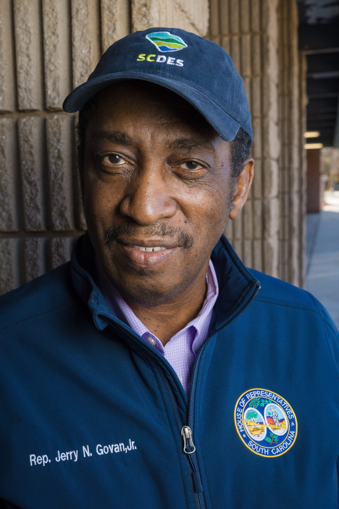
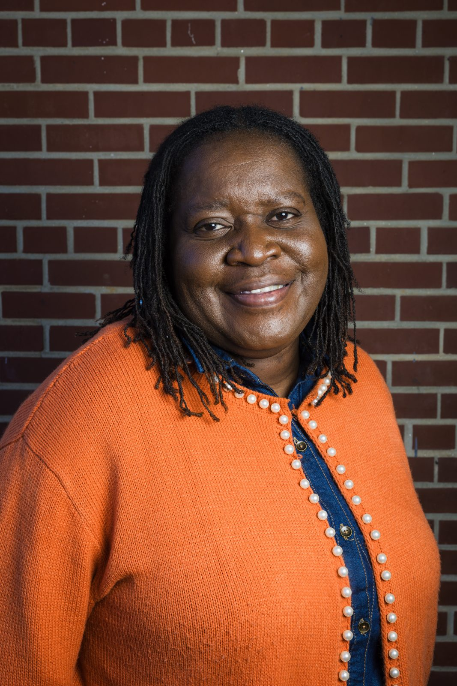
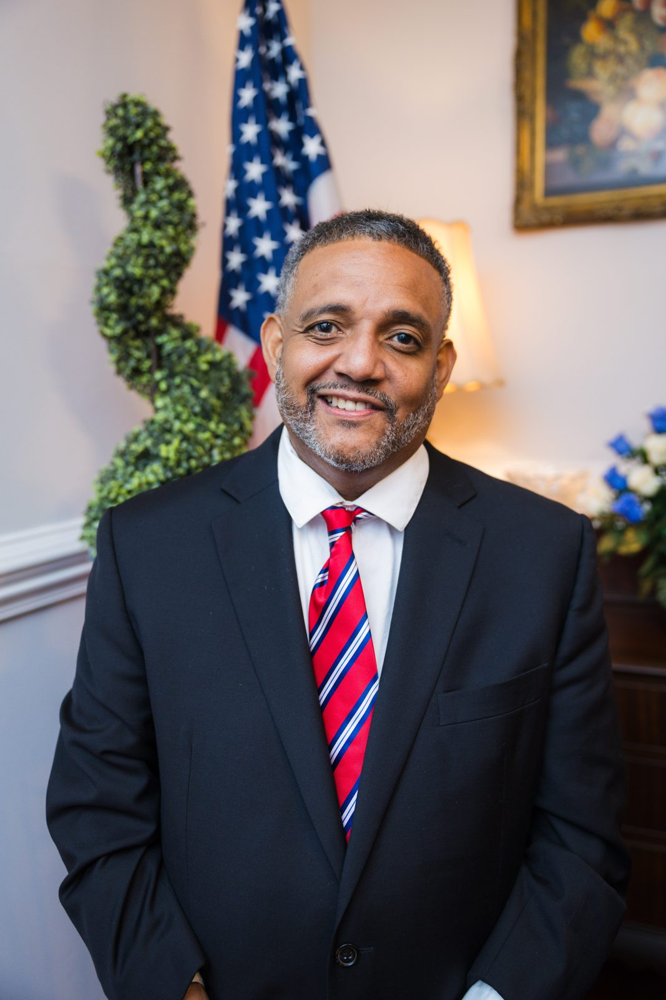
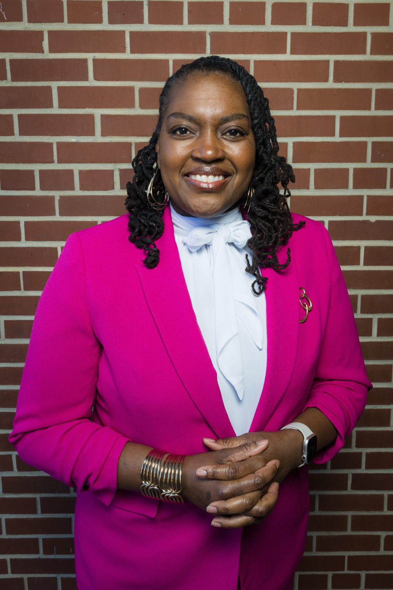
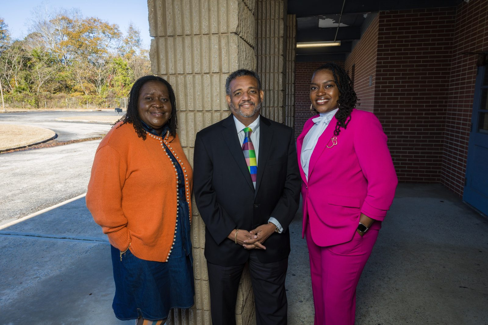
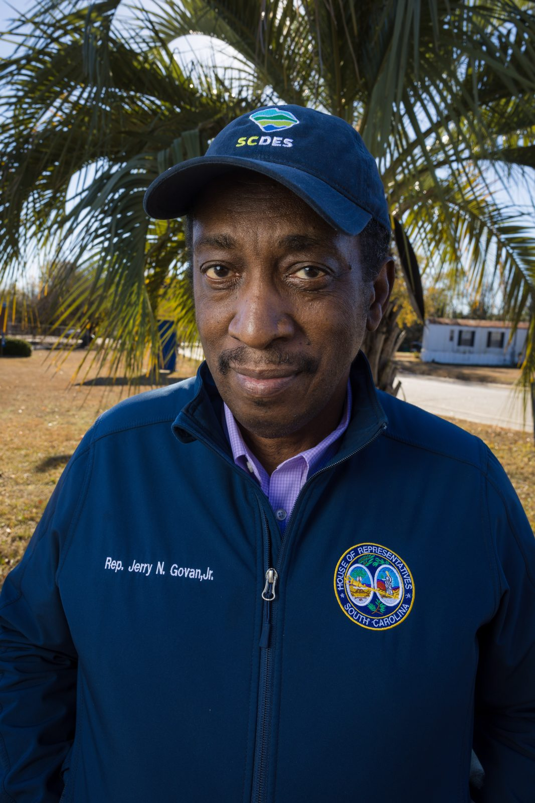
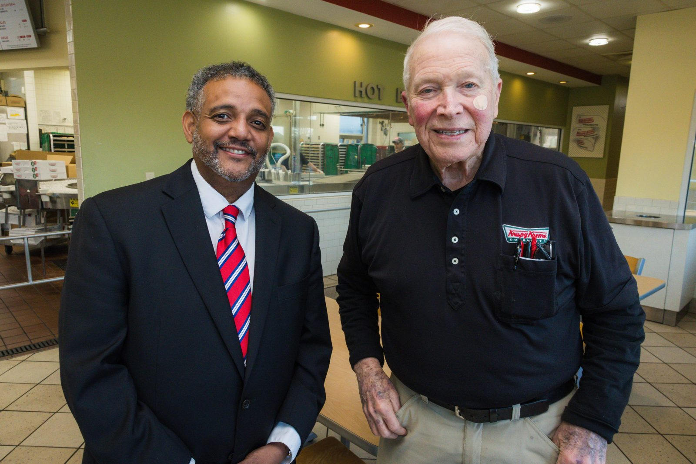
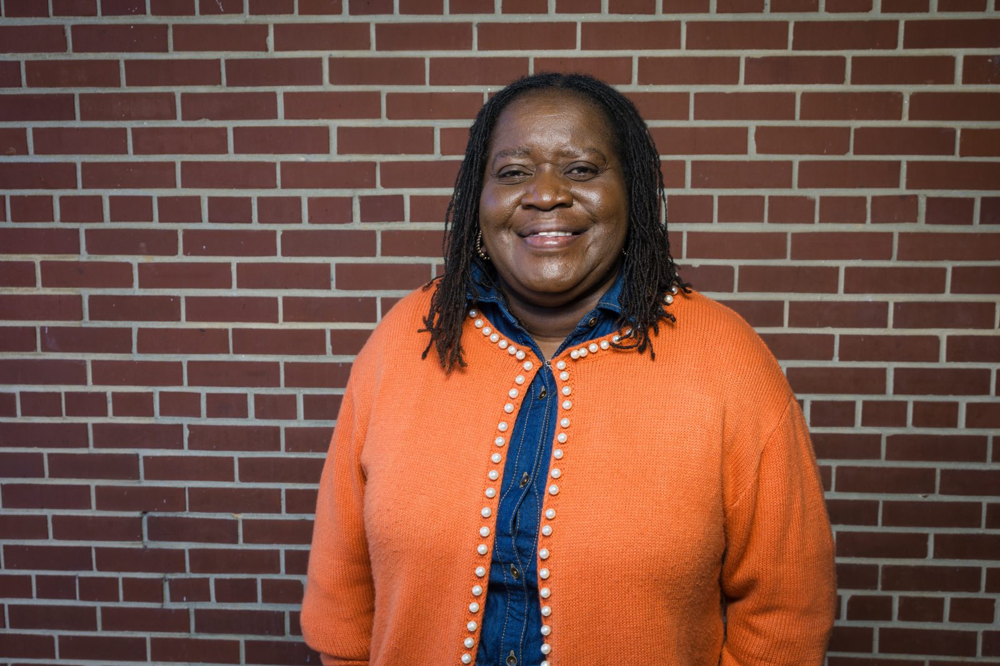
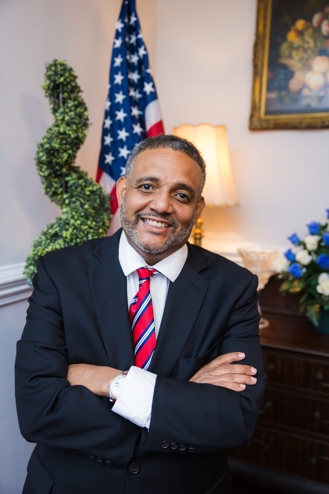
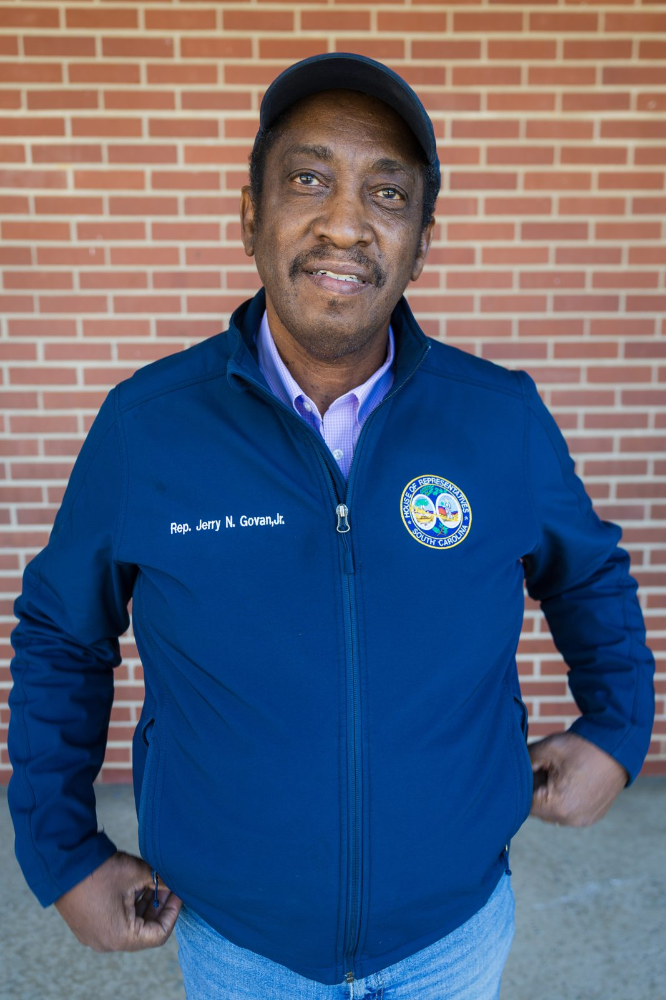
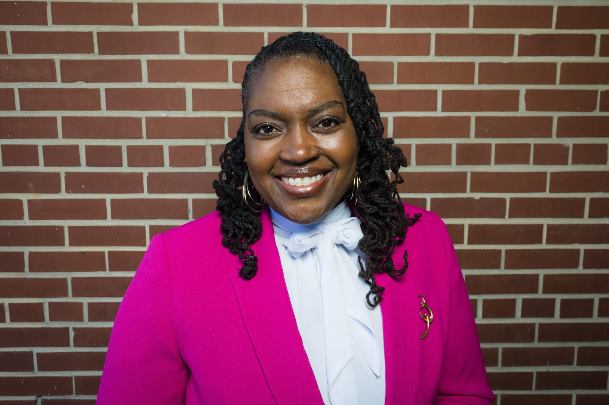
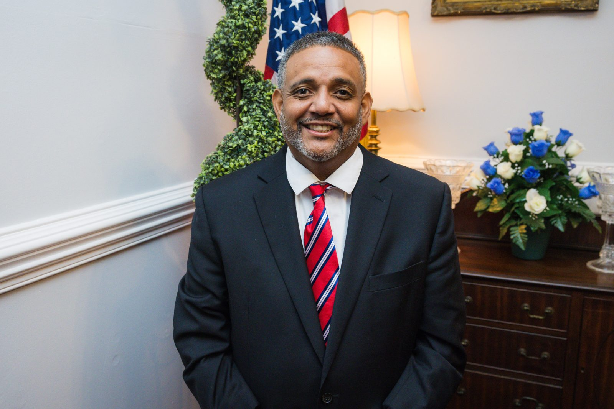
Brandon Brownfor U.S. Senate.
A grassroots Senate campaign needs a site that raises money and a feed that makes people care.
- Built brandonpbrown.com: donate, volunteer, meet-and-greet and voter information
- Ran the campaign’s digital program
- Filmed endorsement videos with Rep. Jerry Govan, former Sen. Glenn Reese, Councilwomen Annette Dees Grevious and Phyllis Smart, and Bishop Hayes T. Ganey Jr.
- Shot campaign portraits and vertical issue videos across the state
Organize. Film.Reach.
Organize
Field that starts early.- Statewide and county field plans built around the January 22 primary calendar
- Door-to-door canvassing, phone banks and relational texting
- Church, HBCU, union and community outreach led by local voices
- Volunteer recruitment and weekly field reporting
Film
Local leaders, on camera.- Endorsement films with South Carolina elected officials and faith leaders
- Constituent outreach and holiday videos for officeholders
- Vertical issue videos for Reels, TikTok and Shorts
- Event coverage for town halls, rallies and bus tours
Reach
Digital that raises and turns out.- Campaign websites with donate, volunteer and voter-registration flows
- Digital ads, email and SMS for grassroots fundraising
- Social media management and graphic design
- Professional headshots and campaign portraits
Founder Rodriquez Wright II was Tennessee state organizing director for Mike Bloomberg’s 2020 presidential campaign. Since then Leo Operations has worked for more than 40 campaigns, officials and causes, with organizing and ballot work in 25 states and more than 650,000 doors knocked.
One team forthe first primary.
Field, film, photo and digital from one firm, so every endorsement, door and ad tells the same story.
South Carolina questions, answered.
Why does South Carolina matter in 2028?
South Carolina holds the first Democratic presidential primary of the 2028 cycle on January 22, 2028, under the calendar the Democratic National Committee approved on August 15, 2026. It is the first chance for candidates to show they can win Black voters and working families in the South.
Has Leo Operations worked in South Carolina?
Yes. We ran digital and built the website for Brandon Brown’s 2026 U.S. Senate campaign, and we filmed and photographed South Carolina legislators, local officials and faith leaders, including Rep. Jerry N. Govan Jr., former State Sen. Glenn Reese, Orangeburg City Councilwoman Annette Dees Grevious, Fairfax Councilwoman Phyllis Smart and Bishop Hayes T. Ganey Jr.
Do you have presidential campaign experience?
Yes. Founder Rodriquez Wright II was Tennessee state organizing director for Mike Bloomberg’s 2020 presidential campaign. Leo Operations has since worked for more than 40 campaigns, officials and causes, with organizing and ballot work in 25 states and more than 650,000 doors knocked.
Do you work with elected officials who are not on the ballot?
Yes. We produce headshots, constituent outreach videos, holiday messages and social content for legislators, council members and other officeholders year round.
Can you film endorsements for a presidential campaign?
Yes. We plan, shoot and edit endorsement films with local leaders in the places voters know them, then cut them for social, email and digital ads with captions and campaign branding.
How do we get started?
Email us about your campaign, your timeline and what you need in South Carolina. We start with a strategy session and follow up with a written proposal.
Win the state that votes first.
Tell us about your campaign and what you need in South Carolina. We will set up a strategy session and send a written proposal.
Plan your South Carolina program →